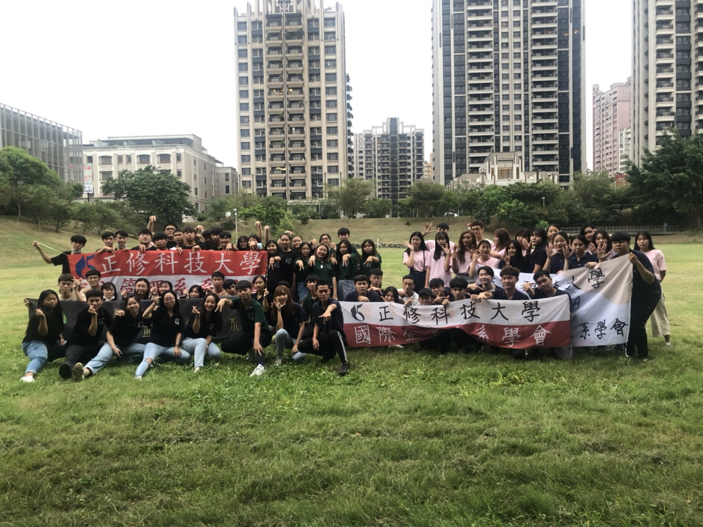

我的系學會
Welcome to my website


我們資管系與其他商管學院的社課
這學期我們商管學院為了讓新入的系學會成員能夠了解彼此，所我們特別與金融管理系，企業管理系，國際企劃系辦了聯合社課也看到大家玩的很開心。
上完社課的大合照
社課上完不免俗都會來張資管系當天到的成員的大合照，很感謝每次來參加社課的弟弟妹妹們。
名人講座與他們的合照
這次名人演講非常開心邀請到了YOUTUBER"我們OUR CHANNEL陳華&言奕組"來為我們演講，在現場聽到他們唱歌真的很幸福，也很開心能與他們合照。